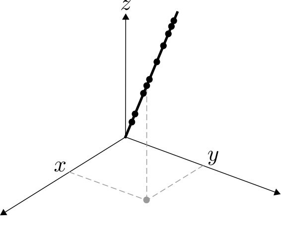
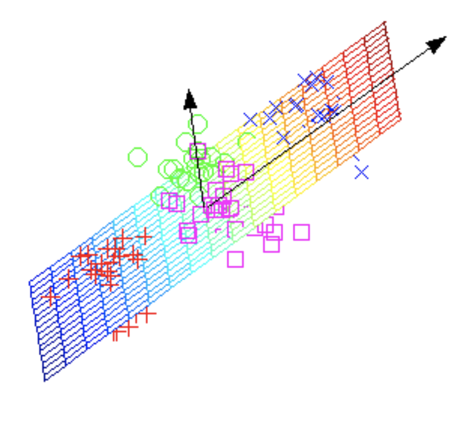
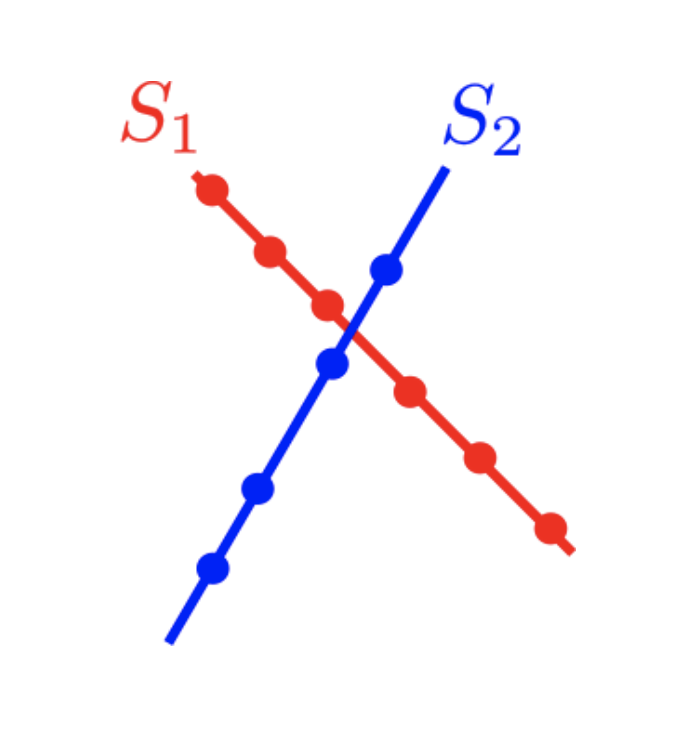
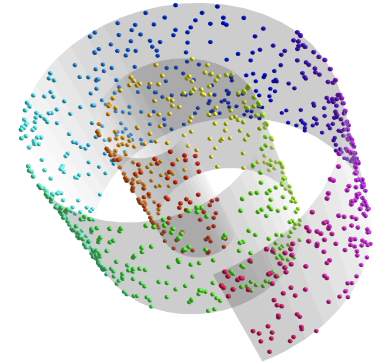

Big data is only getting bigger. For instance, the CERN Large Hadron Collider currently generates so much data that scientists must discard the overwhelming majority of it, hoping that they’ve not thrown away anything useful. The upcoming Square Kilometer Array will daily generate 100 times more data than the CERN LHC, which is more than twice the data sent around the Internet per day! 😱
CERN Large Hadron Collider |
Square Kilometer Array |
|---|---|
Discovery depends on our ability to make sense out of these big data. Fortunately, often all variables can be summarized with just a few. This is called dimensionality reduction. For example, consider the following data points: 
Instead of keeping track of all three variables (x, y, and z coordinates) of each data point, we can simply keep track of (i) the direction of the line (which requires the three coordinates of any point in the line), and the magnitude of each point (distance from the origin). Besides reducing the number of variables, this process gives some insight on the structure of the data. In this example we find that data follows a linear pattern. Finding data patterns plays a crucial role in data analysis and prediction.
Of course, not all data can be explained with such simple patterns. Our work investigates more complex dimensionality reduction models, such as subspaces, unions of subspaces, mixture matrices, and algebraic varieties.
Subspace |
Union of Subspaces |
Algebraic Variety |
|---|---|---|
|  |  |  |